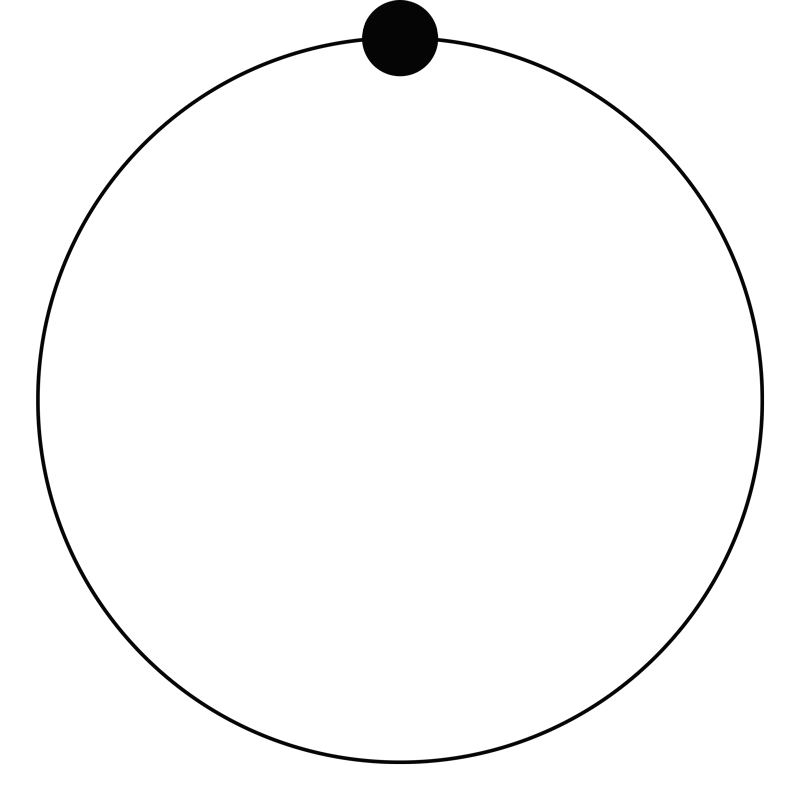
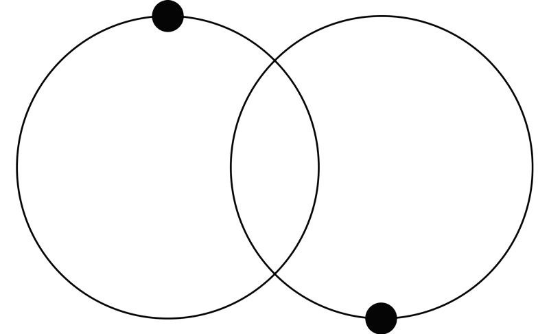

mim・e・o
[mim-ee-oh] (n) Interdimensional nanorobot with biomimetic capabilities (Fig.1). Groups of mimeos can assemble together, much like atoms assemble into molecules, in order to replicate the resources that make up the natural environment.
 Fig.1 Motion diagrams of an individual mimeo + two mimeos connecting.
The fabric of the world is saturated with mimeos. These nanorobots were first discovered dormant in our atmosphere in 2030. Since then, we have learned that they have been invisibly entangled with the atoms and molecules that comprise the matter that makes up our world. In 2040, we officially established "first contact" with these nanorobots and activated them using mimeograph technology.
Individual mimeos can communicate with each other and build according to the knowledge retained by the mimeo cloud. Mimeo Labs works to create a repository of material knowledge for the mimeo cloud that we can utilize to replenish diminishing natural resources and rebuild our world.